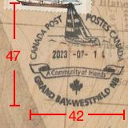

Grand Bay-Westfield STN Main pictorial cancel
A Community of Friends
- Status
- Active
- Run dates
- ? to present
- Design
- "A Community of Friends"; ship; maple leaf shape
- Ink colour
- Black
- Designer
- Unknown
- Post office
- Grand Bay-Westfield STN Main
30 Church Street
Grand Bay-Westfield, NB
E2K 0B3 - Subjects
- ship, vessel, transportation, maple, leaf, plant
Collect it by mail. Send your stamped covers, with a stamped return envelope, to the post office address above. How to collect pictorial cancels by mail · en français
 St Martins STN MainShip in the ocean
St Martins STN MainShip in the ocean Norton POCovered Bridge Country
Norton POCovered Bridge Country Apohaqui STN MainThe joining of two rivers
Apohaqui STN MainThe joining of two rivers Harvey Station POPAYS DE DON MESSER COUNTRY
Harvey Station POPAYS DE DON MESSER COUNTRY Hartland STN MainThe World's Longest Covered Bridge / Le plus long pont couvert du monde
Hartland STN MainThe World's Longest Covered Bridge / Le plus long pont couvert du monde Juniper POTrain, fish, trees
Juniper POTrain, fish, trees